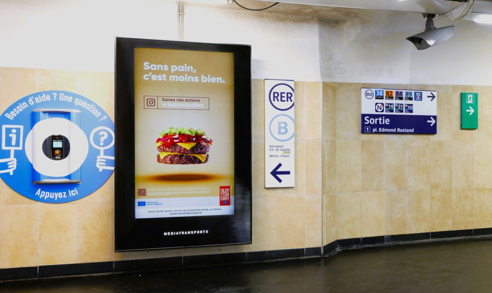
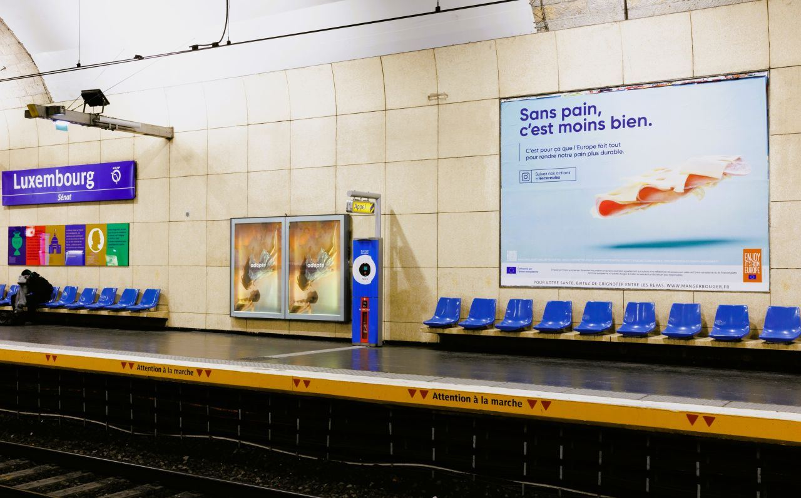
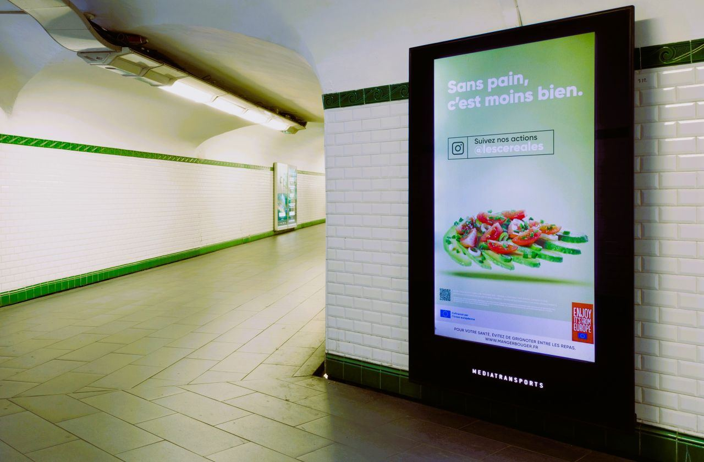
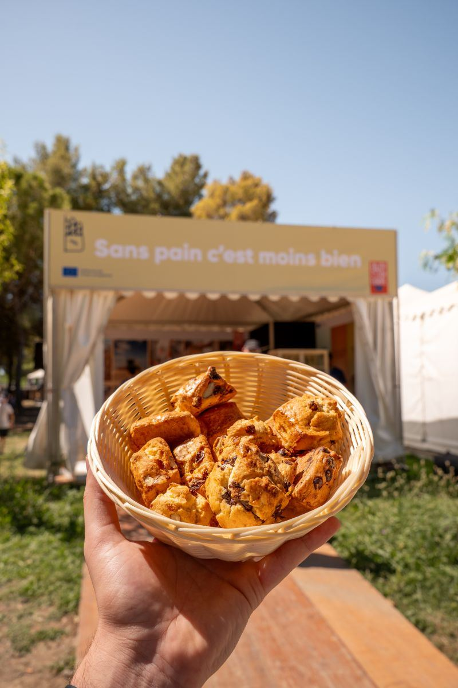
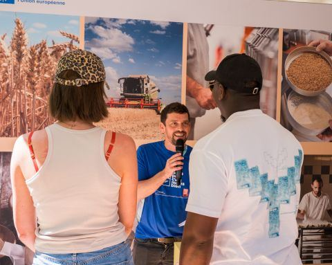
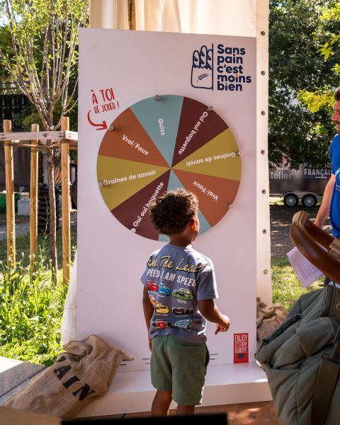
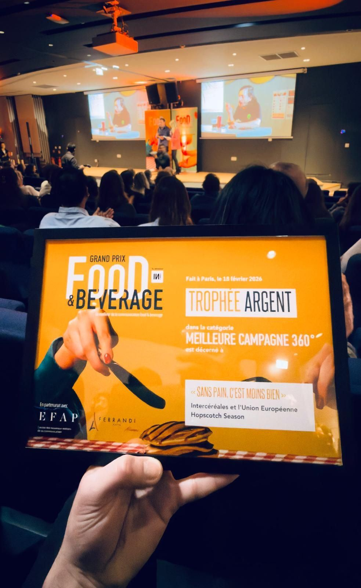

Vidéo
La Disparition.
Court-métrage de la campagne : un monde sans pain, pour qu'on le voie enfin.

Les 18-35 ans mangent de moins en moins de pain. Le pain se fait oublier.
Co-pilote de la campagne pour Intercéréales, je porte le brief stratégique, la supervision création avec l'agence Hopscotch Season et le suivi rédactionnel. La campagne « Sans pain, c'est moins bien » remet le pain là où les jeunes regardent.
Une campagne 360° cofinancée à 70 % par l'Union européenne, déployée en France et en Belgique sur trois ans. Affichage dans sept villes étudiantes puis dans le métro parisien. Présence aux Vieilles Charrues 2024, sur une douzaine de salons étudiants, au FISE de Montpellier. Partenariats avec Roman Doduik en ambassadeur, Hervé Cuisine, Victor Habchy, Démotivateur Food et Le Guide Ultime.
« La Disparition », un court-métrage où le pain s'éteint pour qu'on le voie, génère plus de cent retombées presse en France et en Belgique.
Court-métrage de la campagne : un monde sans pain, pour qu'on le voie enfin.






